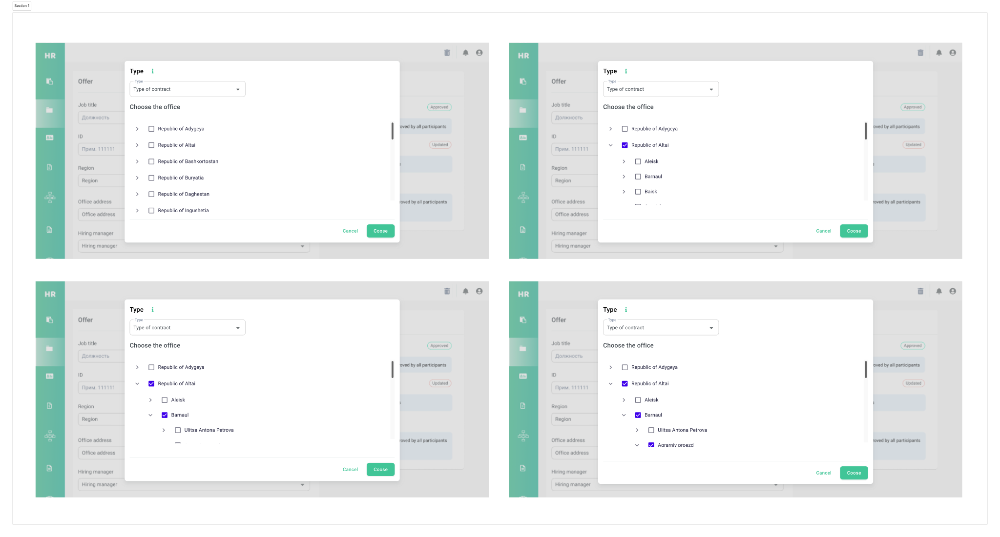
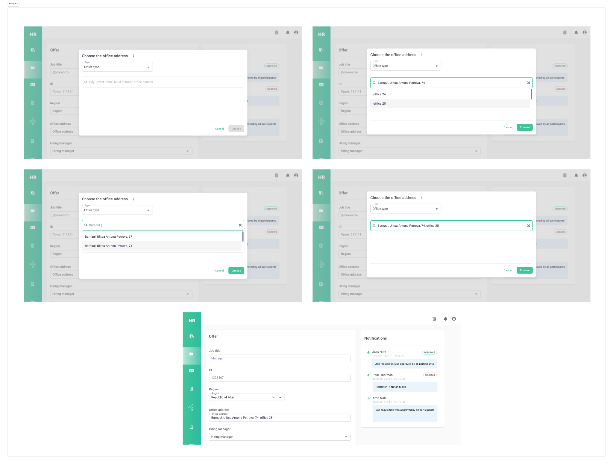

Форма сотрудника — выбор локации
Оформляя оффер, HR-рекрутеры должны были выбрать офис нового сотрудника из иерархического справочника недвижимости — медленный и подверженный ошибкам процесс, который они повторяли десятки раз в день. Я заменила многоуровневое дерево на поиск по адресу, сократив время на задачу на 90%.
Выбор офиса был медленным и с ошибками
Когда в HR-системе оформляется оффер, рекрутер — среди прочих полей — должен выбрать офис, где будет работать новый сотрудник, из справочника недвижимости компании. Рекрутеры жаловались, что процесс слишком сложный и отнимает слишком много времени.
Сначала я сама прошла текущий процесс, чтобы разобраться в нём и подготовиться к интервью с пользователями:
- Справочник недвижимости представлял собой список адресов офисных зданий, устроенный как иерархическое дерево папок, как файловая директория. Чтобы найти нужный адрес, пользователь сначала выбирал регион, потом город, потом улицу и номер.
- У рекрутеров часто была неполная или неточная информация об адресе — она приходила по почте от нанимающего менеджера, у которого не было доступа к справочнику.
- Данные об адресах не были стандартизированы ни по какой картографической базе; они создавались пользователями со временем, поэтому были полны ошибок.
- Экраны выбора показывали много нерелевантной информации о здании — этажи, коридоры и даже туалеты.
Результат: громоздкий процесс, который регулярно заканчивался ошибками.

Общие боли у всех пользователей
Я подготовила список вопросов, чтобы зафиксировать контекст и частоту использования, откуда рекрутеры берут информацию для поиска и с какими самыми большими трудностями они сталкиваются — и проверить, есть ли другой способ решить проблему. Интервью выявили боли, общие для всех пользователей:
Поиск по адресу вместо дерева
Проблема была не только в нашем дизайне — она была ещё и технической, на стороне владельца справочника недвижимости: база изначально создавалась для архитекторов и инженеров-строителей, а не для рекрутеров.
Чтобы исправить процесс, нам нужно было поле поиска по адресу — как в Google Maps — чтобы пользователи могли вводить ту адресную информацию, которая у них уже есть, вместо кликов по веткам с незнакомыми названиями и иерархиями. Это могло сработать только при условии, что справочник проиндексирован по полям офисного здания: город, улица, номер дома, номер комнаты. Вместе с командой разработки мы проверили с владельцем справочника, что он сможет доработать справочник и предоставить индексы — и у нас появилось реализуемое решение.
Тестировали внутри, затем с конечными пользователями
Прежде чем идти к конечным пользователям, я собрала простейший прототип для внутреннего тестирования. После одобрения команды разработки я собрала тестовую группу из конечных пользователей — чтобы убедиться, что фича не только реализуема, но и реально решает боль. Обратная связь не выявила крупных проблемных зон, только несколько мелких интерфейсных вопросов. После ещё нескольких правок и итераций финальный hi-fi прототип был готов к разработке.

QA на самых сложных флоу
Мне нужно было убедиться, что выпущенная фича соответствует спецификации и по функциональности, и по удобству. Поскольку прототип в Figma нельзя было протестировать на реальных данных, мы сфокусировались на самых сложных пользовательских флоу — и я собрала у конечных пользователей самые трудные реальные кейсы, чтобы передать их в QA.